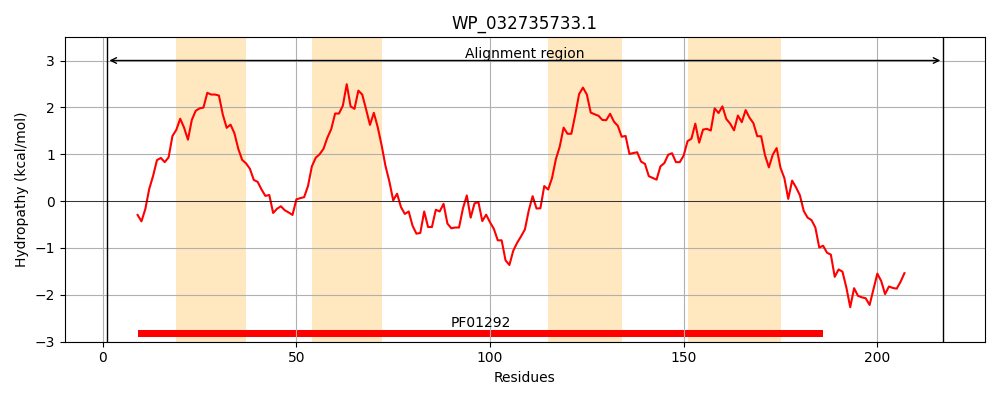
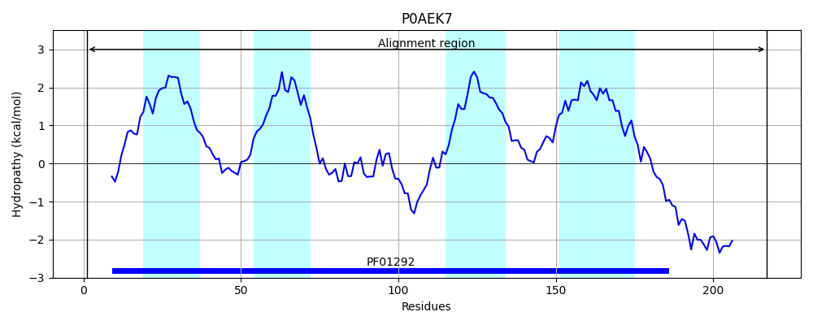
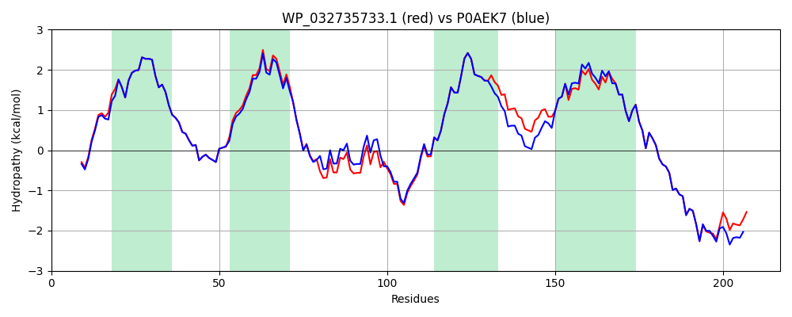

Hit Accession: P0AEK7
Hit TCID: 5.A.3.2.1
Hit Description: gnl|BL_ORD_ID|8783 gnl|TC-DB|P0AEK7|5.A.3.2.1 Formate dehydrogenase, nitrate-inducible, cytochrome b556(fdn) subunit - Escherichia coli.
Mach Len: 217
e:0.000000
Query TMS Count : 4
Hit TMS Count: 4
TMS-Overlap Score: 4.150000
Predicted Substrates:CHEBI:10545;electron
BLAST Alignment:
Score: 1061 , Bit scores: 413 bits, E-value: 3.0e-149, Alignment length: 217, Percentage identity: 89
Query: 1 MSKSKMIMRTTFIDRACHWTVVICFFLVALSGISFFFPTLQWLTETFGTPQMGRILHPFFGVLIFVALMFMFVRFVHHNIPDKQDIPWLKGIVEVLKGNEHKVARVGKYNAGQKMMFWTIMSMIFVLLVTGVIIWRPYFAAYFPIQVIRYSLLIHATSAIILIHAILIHMYMAFWVKGSIKGMIEGKVSRRWAKKHHPRWYRDVERLEAMKESREGM 217
MSKSKMI+RT FIDRACHWTVVICFFLVALSGISFFFPTLQWLT+TFGTPQMGRILHPFFG+ IFVALMFMFVRFVHHNIPDK+DIPWL IVEVLKGNEHKVA VGKYNAGQKMMFW+IMSMIFVLLVTGVIIWRPYFA YFP+QV+RYSLLIHA + IILIHAILIHMYMAFWVKGSIKGMIEGKVSRRWAKKHHPRWYR++E+ EA KES EG+
Sbjct: 1 MSKSKMIVRTKFIDRACHWTVVICFFLVALSGISFFFPTLQWLTQTFGTPQMGRILHPFFGIAIFVALMFMFVRFVHHNIPDKKDIPWLLNIVEVLKGNEHKVADVGKYNAGQKMMFWSIMSMIFVLLVTGVIIWRPYFAQYFPMQVVRYSLLIHAAAGIILIHAILIHMYMAFWVKGSIKGMIEGKVSRRWAKKHHPRWYREIEKAEAKKESEEGI 217 | Protein Hydropathy Plots: |
|---|
|  |  |
Pairwise Alignment-Hydropathy Plot:
|
|---|
|  |